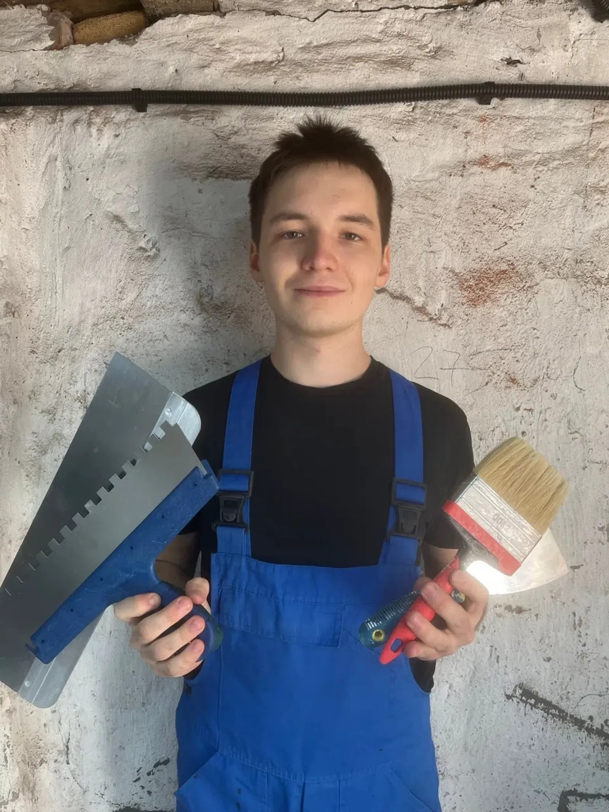
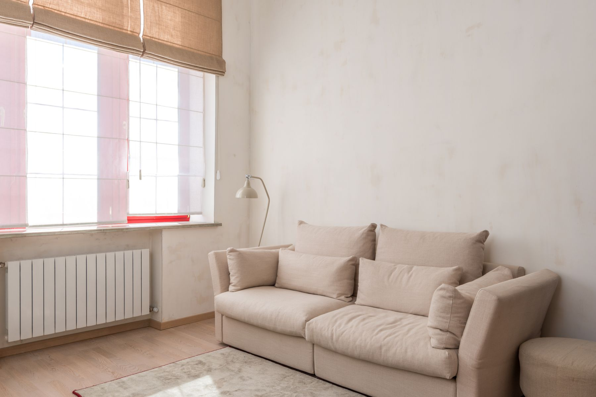
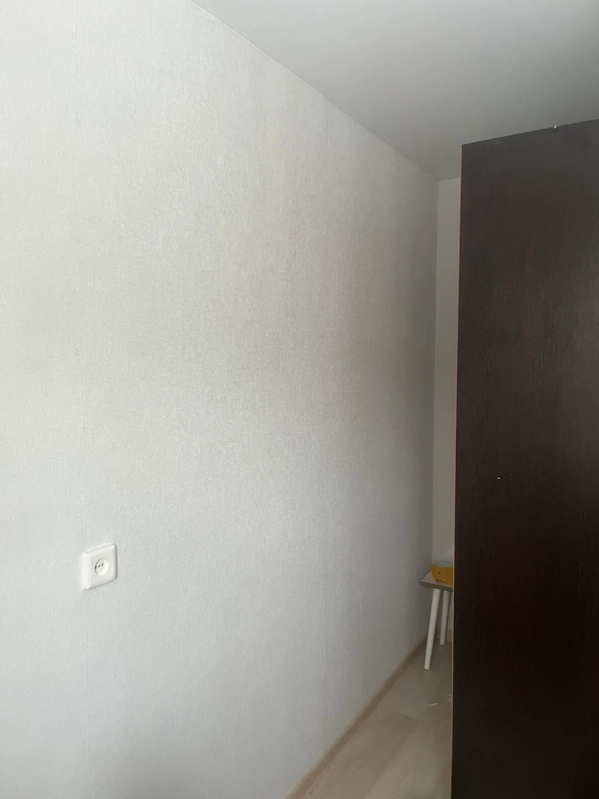
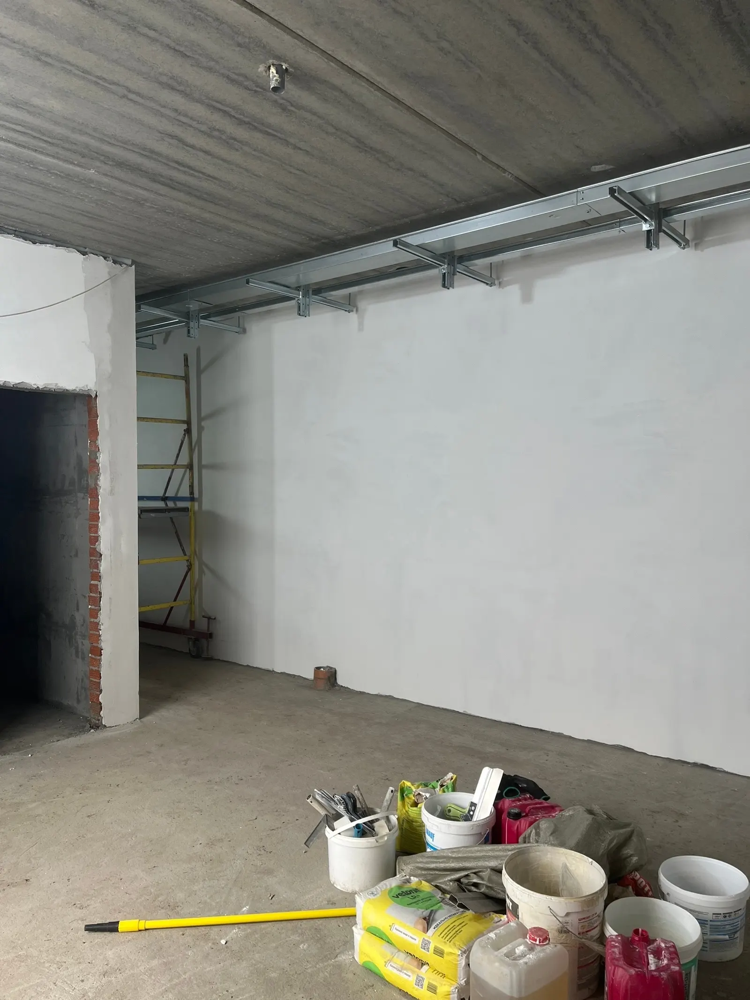
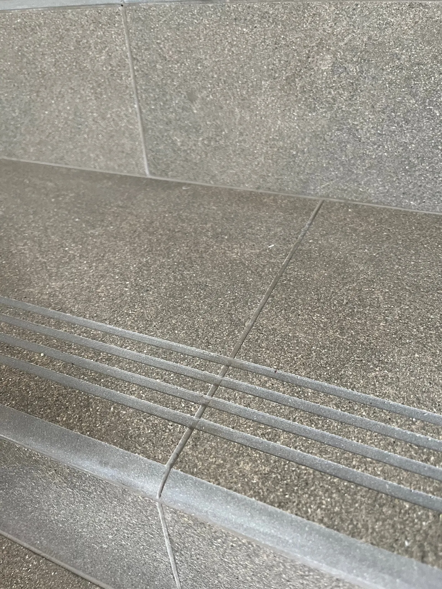

Поклейка обоев
Подгонка рисунка, аккуратные стыки и чистое покрытие.

ДЕКОРПРООТДЕЛКА ИНТЕРЬЕРОВ · КИРОВАккуратная подготовка стен и финишная отделка — с вниманием к стыкам, фактуре и деталям, которые остаются в доме каждый день.
Подход
Хороший ремонт не требует лишних слов. Он ощущается в ровной поверхности, чистом стыке, точной подгонке рисунка и спокойствии, когда работа сделана аккуратно.
«ДекорПро» — отделочные работы мастера Сергея в Кирове. От состояния основания до последнего видимого стыка: объём и смета согласуются до начала работ, материалы подбираются под конкретную поверхность.

Услуги · Киров
Подгонка рисунка, аккуратные стыки и чистое покрытие.
Подготовка и выравнивание основания под финишное покрытие.
Основа для последующих этапов отделки с учётом состояния стен.
Что важно в процессе
Объём и смета согласуются до начала работ.
Материалы выбираются под состояние поверхности.
Внимание уделяется углам, стыкам, швам и чистоте результата.
Результат вблизи

01 — ОБОИВнимание к фактуре, стыкам и краям покрытия.

02 — ОСНОВАОснование определяет качество финишного слоя.

03 — ОБЛИЦОВКАРовная линия и переход между материалами.
Осмотр и смета · подготовка основания · финишная отделка · проверка деталей
Реальные работы
Нажмите на кадр, чтобы открыть его крупно.
01 / ОБОИ
Человек за работой
Специализируюсь на подготовке стен и финишной отделке: штукатурке, шпаклёвке, поклейке обоев и монтаже плинтусов.
Согласовываю смету до начала работ, помогаю с материалами и уделяю внимание мелочам, которые остаются на виду каждый день.
Обсудить объектКонтакт
Для оценки расскажите, что нужно сделать, и пришлите фотографии помещения. Работаю в Кирове.
Оставить заявку в ВК